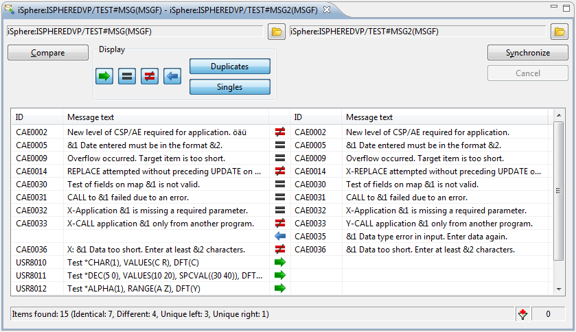
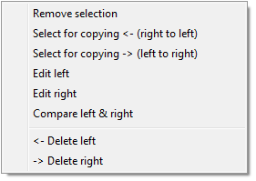
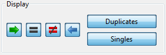
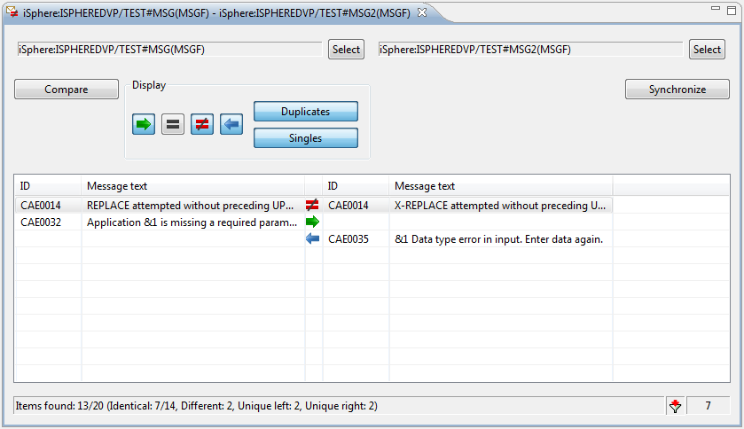

Select one or two message files from the RSE tree and open the iSphere Message File Compare Editor from the context menu. If you select only one message file, then you need to open the second file from the compare editor.
Once that both sides have a message file, click the Compare button to start. After the compare process finished, you can change the actions from the context menus of the message descriptions. For example you may want to change the not equal action to copy from right to left or copy from left to right.
When you are satisfied with the selected actions, you can press the Synchronize button to apply the selected actions to the message descriptions in order to synchronize both message files.
There are also options for Removing, Editing and Comparing message descriptions.
The complete context menu looks like that:

Use the filter buttons to filter the message descriptions:

A checked button indicates that the relevant entries are displayed. Uncheck one or more buttons to remove entries from the display.

The status bar keeps you informed about filtered entries.
The following attributes are used for comparing and synchronizing message descriptions:
The Message File Compare Editor uses the MERGMSGF command for merging message descriptions.
The Message File Compare Editor uses the ADDMSGD and CHGMSGD commands for merging message descriptions.